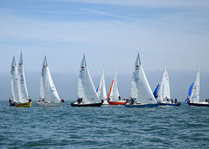

Howth to Drogheda Yacht Challenge

In conjunction with the Irish Maritime Festival and Drogheda Port Company, Howth Yacht Club is delighted to announce the revival of a once traditional race for cruiser classes to the Boyne. The race will happen on Saturday June 20th.
The Howth to Drogheda Yacht Challenge’ is a race for cruiser-racing and non-spinnaker classes and is a performance handicap race. The race commences in Howth Sound at 1000 hrs, finishing at the mouth of the Boyne in the early afternoon at approximately 1400 hrs. The winner of the challenge will be presented with the Drogheda Port perpetual challenge trophy. The yachts will then arrive into the Irish Maritime Festival in a parade of sail at approximately 1530 hrs.
A number of prizes will be awarded, including the best dressed boat and the best dressed pirate crew.
Further information Howth Yacht Club visit www.hyc.ie
Day: Saturday 20th June 2015
Start: Howth
Finish: Mouth of Boyne
Time: 10.00 - 14.00 & parade of sail @ 15.30 Saturday 20th June 2015